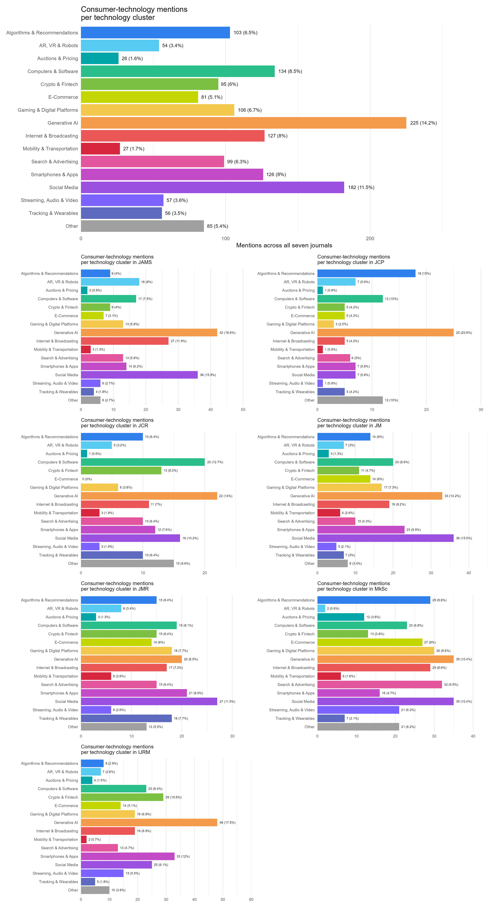

Appendix B. Supplementary Analyses to Analysis 1
Introduction
- Two supplements to the semantic model, each on the same corpus and the same 16 technology clusters.
- Temporal trajectories — companion to the peak estimates reported in Table 1; shows the full trajectory of each cluster rather than its maximum alone.
- Journal technology mix — where the corpus was published, and whether a journal’s mix of technology clusters departs from the corpus as a whole.
- Descriptive only; no claim about editorial policy or selection.
Temporal Trajectories
Method
- Sample: empirical consumer-technology articles, 2000–2026, assigned to one of the 16 technology clusters.
- Unit: mention. An article naming several technologies contributes one mention per technology.
- One model per cluster. Negative-binomial GAM of yearly mentions on a smooth of publication year.
- Offset: all technology mentions of that year, so each cluster is modelled as a share of technology research rather than as a raw count.
- Numerator and denominator are affected alike by the partial year 2026, which therefore stays in.
- Basis dimension capped at
k = 5. - Peak = maximum of the fitted curve, reported in Table 1.
- Code:
10_semantic_mapping/10_temporal_gam.R.
Results
- Figure 1 shows one panel per cluster.
- Line = fitted share from the model. Points = observed annual share.
- Vertical scales differ between panels, so the shape of a trajectory is comparable across clusters but its level is not.
- A curve rising or falling across the whole period peaks at a boundary year in Table 1.
- A curve cresting inside the period peaks at that year.
| Technology cluster | Mentions | Peak year | Peak share | p |
|---|---|---|---|---|
| Algorithms & Recommendations | 103 | 2026 | 7.2% | .604 |
| AR, VR & Robots | 54 | 2026 | 6.0% | < .001 |
| Auctions & Pricing | 26 | 2007 | 5.4% | .004 |
| Computers & Software | 134 | 2000 | 21.5% | < .001 |
| Crypto & Fintech | 95 | 2026 | 10.5% | .034 |
| E-Commerce | 81 | 2000 | 11.6% | .001 |
| Gaming & Digital Platforms | 106 | 2026 | 9.4% | .002 |
| Generative AI | 225 | 2026 | 30.2% | < .001 |
| Internet & Broadcasting | 127 | 2000 | 29.4% | < .001 |
| Mobility & Transportation | 27 | 2000 | 1.8% | .942 |
| Search & Advertising | 99 | 2000 | 12.2% | .012 |
| Smartphones & Apps | 126 | 2017 | 11.9% | .041 |
| Social Media | 182 | 2016 | 24.1% | < .001 |
| Streaming, Audio & Video | 57 | 2026 | 4.6% | .153 |
| Tracking & Wearables | 56 | 2014 | 4.5% | .388 |
| Other | 85 | 2014 | 7.3% | .440 |

Journal Technology Mix
Method
- Seven marketing journals: IJRM, JAMS, JCP, JCR, JM, JMR, MkSc.
- Sample: empirical consumer-technology articles, 2000–2026, with a technology cluster assigned.
- Unit: mention; an article naming several technologies contributes one mention per technology.
- Counts cross-tabulated as journals (7) × technology clusters (16).
Deviation Test
- Question: does a journal’s technology mix differ from the corpus as a whole?
- Baseline
b: overall technology cluster shares across the whole corpus,b_k = (Σ_j n_jk) / N. - Baseline includes the journal being tested, so all seven rows are read against one fixed reference point rather than seven shifting ones.
- Validity: each mention falls in exactly one technology cluster, so a journal’s shares sum to 1 and the composition is proper; Dirichlet-multinomial applies.
- Prior: Dirichlet, concentration
α_k = K · b_kwithK = 16technology clusters, identical for every journal. - Prior mean = baseline, i.e. “this journal’s mix matches the corpus”.
- Prior mass
Σα_k = K, the same total weight as a flat Dirichlet(1, …, 1), redistributed proportionally rather than uniformly; equivalent to 16 pseudo-mentions of evidence for the null. - Effect: shrinks each journal toward the baseline, so small journals are pulled almost fully to the null and marks are harder to earn.
- Posterior: Dirichlet-multinomial conjugacy,
Dirichlet(α_k + n_jk)for journalj. - Sampling: gamma normalization,
g_k ~ Gamma(α_k + n_jk, 1)thenp_k = g_k / Σ g_k; 20,000 draws per journal, each a 16-vector summing to 1; single fixed seed. - Deviation per draw:
d_k = p_k − b_k. - Interval: equal-tailed 95% credible interval, 2.5th and 97.5th percentile of the draws, read off the empirical quantiles.
- Intervals marginal per cell, no multiplicity correction across the 7 × 16 cells.
- Marks:
^1^interval entirely above zero,^2^entirely below, blank spans zero. - Blank conflates no effect with too little data.
- Marks concern share of a journal’s output, not counts; a small journal can be marked on modest absolute numbers.
- Corpus is a census, so intervals generalize to the ongoing publishing process rather than to an unknown fixed quantity.
Results
- Table 2 reports mentions per technology cluster and journal.
- Rows are the 16 technology clusters, alphabetical with Other last; Total gives the cluster size across all seven journals.
- Cell shares are row-wise, the share of the cluster’s mentions falling in that journal.
- Marks are column-wise, on the journal’s own technology composition, so cell share and mark use different denominators.
^1^a cluster credibly over-represented in that journal relative to its corpus-wide share,^2^credibly under-represented, blank no credible deviation.
| Technology Cluster | Total | IJRM | JAMS | JCP | JCR | JM | JMR | MkSc |
|---|---|---|---|---|---|---|---|---|
| Algorithms & Recommendations | 103 (6.5%) | 8 (7.8%)2 | 9 (8.7%) | 18 (17.5%)1 | 10 (9.7%) | 14 (13.6%) | 15 (14.6%) | 29 (28.2%) |
| AR, VR & Robots | 54 (3.4%) | 7 (13.0%) | 18 (33.3%)1 | 7 (13.0%) | 5 (9.3%) | 7 (13.0%) | 8 (14.8%) | 2 (3.7%)2 |
| Auctions & Pricing | 26 (1.6%) | 4 (15.4%) | 2 (7.7%) | 1 (3.8%) | 1 (3.8%) | 3 (11.5%) | 3 (11.5%) | 12 (46.2%)1 |
| Computers & Software | 134 (8.5%) | 23 (17.2%) | 17 (12.7%) | 12 (9.0%) | 20 (14.9%) | 20 (14.9%) | 19 (14.2%) | 23 (17.2%) |
| Crypto & Fintech | 95 (6.0%) | 29 (30.5%)1 | 9 (9.5%) | 5 (5.3%) | 13 (13.7%) | 11 (11.6%) | 15 (15.8%) | 13 (13.7%) |
| E-Commerce | 81 (5.1%) | 14 (17.3%) | 7 (8.6%) | 5 (6.2%) | 0 (0.0%)2 | 14 (17.3%) | 14 (17.3%) | 27 (33.3%)1 |
| Gaming & Digital Platforms | 106 (6.7%) | 19 (17.9%) | 13 (12.3%) | 3 (2.8%)2 | 6 (5.7%) | 17 (16.0%) | 18 (17.0%) | 30 (28.3%) |
| Generative AI | 225 (14.2%) | 48 (21.3%) | 42 (18.7%) | 25 (11.1%) | 22 (9.8%) | 33 (14.7%) | 20 (8.9%)2 | 35 (15.6%)2 |
| Internet & Broadcasting | 127 (8.0%) | 19 (15.0%) | 27 (21.3%) | 5 (3.9%) | 11 (8.7%) | 19 (15.0%) | 17 (13.4%) | 29 (22.8%) |
| Mobility & Transportation | 27 (1.7%) | 2 (7.4%) | 3 (11.1%) | 1 (3.7%) | 3 (11.1%) | 6 (22.2%) | 6 (22.2%) | 6 (22.2%) |
| Search & Advertising | 99 (6.3%) | 13 (13.1%) | 13 (13.1%) | 6 (6.1%) | 10 (10.1%) | 10 (10.1%) | 15 (15.2%) | 32 (32.3%)1 |
| Smartphones & Apps | 126 (8.0%) | 33 (26.2%)1 | 14 (11.1%) | 7 (5.6%) | 12 (9.5%) | 23 (18.3%) | 21 (16.7%) | 16 (12.7%)2 |
| Social Media | 182 (11.5%) | 25 (13.7%) | 36 (19.8%) | 7 (3.8%)2 | 16 (8.8%) | 36 (19.8%) | 27 (14.8%) | 35 (19.2%) |
| Streaming, Audio & Video | 57 (3.6%) | 15 (26.3%) | 6 (10.5%) | 1 (1.8%)2 | 3 (5.3%) | 5 (8.8%) | 6 (10.5%) | 21 (36.8%)1 |
| Tracking & Wearables | 56 (3.5%) | 5 (8.9%) | 4 (7.1%) | 5 (8.9%) | 10 (17.9%) | 7 (12.5%) | 18 (32.1%)1 | 7 (12.5%) |
| Other | 85 (5.4%) | 10 (11.8%) | 6 (7.1%)2 | 12 (14.1%) | 15 (17.6%) | 8 (9.4%) | 13 (15.3%) | 21 (24.7%) |
- Figure 2 shows the counts of Table 2 as bar charts: top panel across all seven journals, lower panels one per journal.

- The journal citation network based on the same counts is reported in Appendix C.